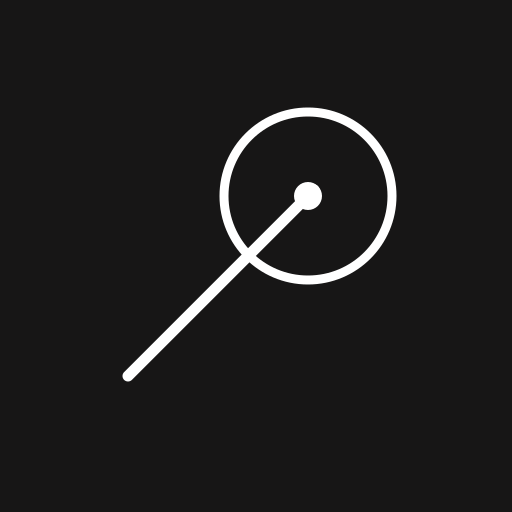
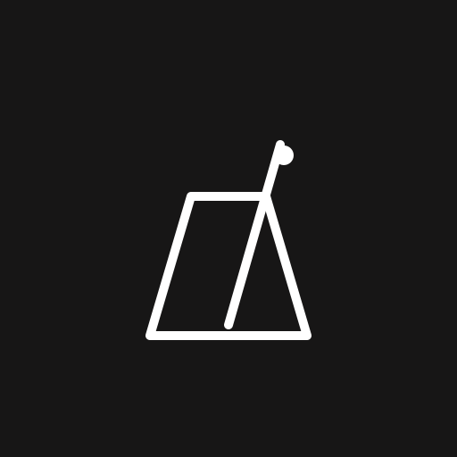
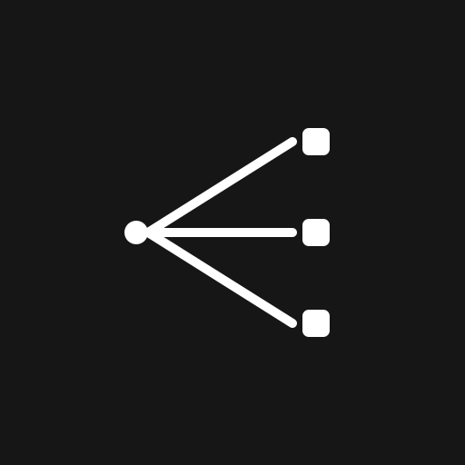
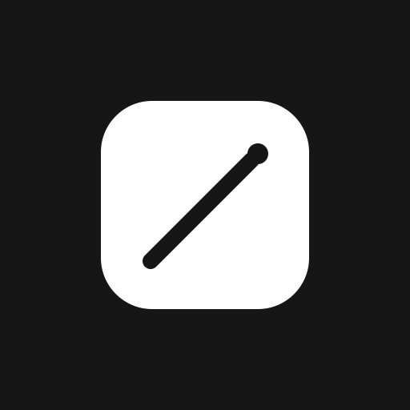
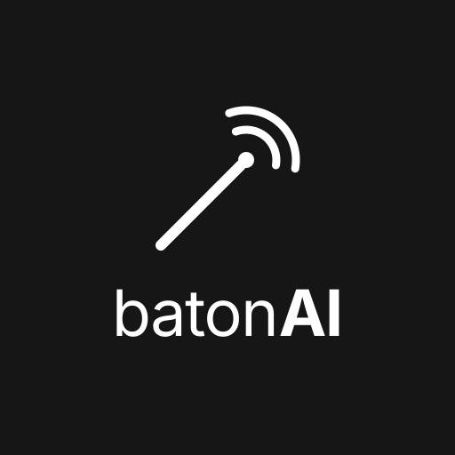

Seis conceptos, mismo lenguaje: blanco puro sobre #171616. SVG vectorial, escalable.
La batuta marca el compás y el gesto emite ondas: dirigir y avisar a la vez. La más cercana a tu logo actual, pero sin atril.

La batuta apunta al centro de un círculo: el punto de atención. Muy limpia, funciona a 16 px y como avatar.

El compás que nunca se detiene: encendido permanente, ritmo constante. Silueta distinta al resto, muy legible en pequeño.

Un punto que reparte en tres: tú diriges, los agentes ejecutan. La que mejor cuenta el producto, no solo la metáfora musical.

Versión app-icon: cuadrado redondeado sólido con la batuta en negativo. Máximo contraste en pantalla y en la barra de tareas.

Lockup completo: marca mínima + “batonAI”. Para cabeceras, README y carcasa del panel.